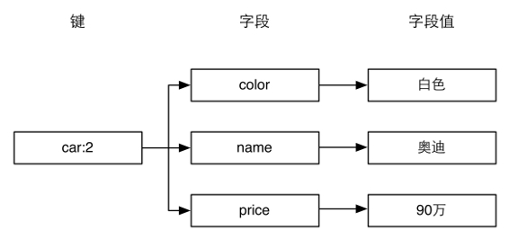
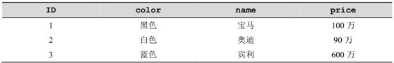
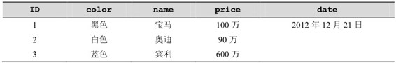
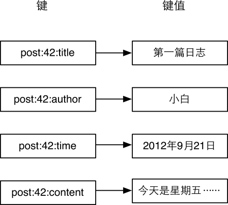
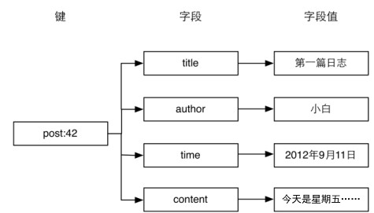

3.3 散列类型
小白只用了半个多小时就把访问统计和发表文章两个部分做好了。同时借助Bootstrap框架[7] ，老师花了一小会儿时间教会了之前只涉猎过HTML的小白如何做出一个像样的网页界面。
接着小白发问：
接下来我想要做的功能是博客的文章列表页，我设想在列表页中每个文章只显示标题部分，可是使用您刚才介绍的方法，若想取得文章的标题，必须把整个文章数据字符串取出来反序列化，而其中占用空间最大的文章内容部分却是不需要的，这样难道不会在传输和处理时造成资源浪费吗？
老师有些惊喜地看着小白答道：“很对！”同时以一个夸张的幅度点了下头，接着说：
这正是我接下来准备讲的。不仅取数据时会有资源浪费，在修改数据时也会有这个问题，比如当你只想更改文章的标题时也不得不把整个文章数据字符串更新一遍。
没等小白再问，老师就又继续说道：
前面我说过 Redis 的强大特性之一就是提供了多种实用的数据类型，其中的散列类型可以非常好地解决这个问题。
我们现在已经知道 Redis 是采用字典结构以键值对的形式存储数据的，而散列类型（hash）的键值也是一种字典结构，其存储了字段（field）和字段值的映射，但字段值只能是字符串，不支持其他数据类型，换句话说，散列类型不能嵌套其他的数据类型。一个散列类型键可以包含至多232−1个字段。
提示 除了散列类型，Redis 的其他数据类型同样不支持数据类型嵌套。比如集合类型的每个元素都只能是字符串，不能是另一个集合或散列表等。
散列类型适合存储对象：使用对象类别和 ID 构成键名，使用字段表示对象的属性，而字段值则存储属性值。例如要存储ID为2的汽车对象，可以分别使用名为color、name和price的3个字段来存储该辆汽车的颜色、名称和价格。存储结构如图3-5所示。

图3-5 使用散列类型存储汽车对象的结构图
回想在关系数据库中如果要存储汽车对象，存储结构如表3-2所示。
表3-2 关系数据库存储汽车资料的表结构

数据是以二维表的形式存储的，这就要求所有的记录都拥有同样的属性，无法单独为某条记录增减属性。如果想为 ID 为 1 的汽车增加生产日期属性，就需要把数据表更改为如表3-3所示的结构。
表3-3 为其中一辆汽车增加一个“属性”

对于ID为2和3的两条记录而言date字段是冗余的。可想而知当不同的记录需要不同的属性时，表的字段数量会越来越多以至于难以维护。而且当使用ORM[8] 将关系数据库中的对象实体映射成程序中的实体时，修改表的结构往往意味着要中断服务（重启网站程序）。为了防止这些问题，在关系数据库中存储这种半结构化数据还需要额外的表才行。
而 Redis 的散列类型则不存在这个问题。虽然我们在图 3-5 中描述了汽车对象的存储结构，但是这个结构只是人为的约定，Redis并不要求每个键都依据此结构存储，我们完全可以自由地为任何键增减字段而不影响其他键。
1．赋值与取值
HSET key field value
HGET key field
HMSET key field value [field value …]
HMGET key field [field …]
HGETALL key
HSET命令用来给字段赋值，而HGET命令用来获得字段的值。用法如下：
redis> HSET car price 500
(integer) 1
redis> HSET car name BMW
(integer) 1
redis> HGET car name
"BMW"
HSET 命令的方便之处在于不区分插入和更新操作，这意味着修改数据时不用事先判断字段是否存在来决定要执行的是插入操作（update）还是更新操作（insert）。当执行的是插入操作时（即之前字段不存在）HSET命令会返回1，当执行的是更新操作时（即之前字段已经存在）HSET命令会返回0。更进一步，当键本身不存在时，HSET命令还会自动建立它。
提示 在Redis中每个键都属于一个明确的数据类型，如通过 HSET命令建立的键是散列类型，通过SET命令建立的键是字符串类型等等。使用一种数据类型的命令操作另一种数据类型的键会提示错误："ERR Operation against a key holding the wrong kind of value"[9] 。
当需要同时设置多个字段的值时，可以使用HMSET命令。例如，下面两条语句
HSET key field1 value1
HSET key field2 value2
可以用HMSET命令改写成
HMSET key field1 value1 field2 value2
相应地，HMGET命令可以同时获得多个字段的值：
redis> HMGET car price name
1) "500"
2) "BMW"
如果想获取键中所有字段和字段值却不知道键中有哪些字段时（如3.3.1节介绍的存储汽车对象的例子，每个对象拥有的属性都未必相同）应该使用HGETALL命令。如：
redis> HGETALL car
1) "price"
2) "500"
3) "name"
4) "BMW"
返回的结果是字段和字段值组成的列表，不是很直观，好在很多语言的 Redis 客户端会将 HGETALL 的返回结果封装成编程语言中的对象，处理起来就非常方便了。例如，在Node.js中：
redis.hgetall("car", function (error, car) {
//hgetall 方法的返回的值被封装成了 JavaScript的对象
console.log(car.price);
console.log(car.name);
});
2．判断字段是否存在
HEXISTS key field
HEXISTS命令用来判断一个字段是否存在。如果存在则返回1，否则返回0（如果键不存在也会返回0）。
redis> HEXISTS car model
(integer) 0
redis> HSET car model C200
(integer) 1
redis> HEXISTS car model
(integer) 1
3．当字段不存在时赋值
HSETNX key field value
HSETNX[10] 命令与HSET命令类似，区别在于如果字段已经存在，HSETNX命令将不执行任何操作。其实现可以表示为如下伪代码：
def hsetnx($key, $field, $value)
$isExists = HEXISTS $key, $field
if $isExists is 0
HSET $key, $field, $value
return 1
else
return 0
只不过HSETNX命令是原子操作，不用担心竞态条件。
4．增加数字
HINCRBY key field increment
上一节的命令拾遗部分介绍了字符串类型的命令INCRBY，HINCRBY命令与之类似，可以使字段值增加指定的整数。散列类型没有 HINCR 命令，但是可以通过 HINCRBY key field 1来实现。
HINCRBY命令的示例如下：
redis> HINCRBY person score 60
(integer) 60
之前person键不存在，HINCRBY命令会自动建立该键并默认score字段在执行命令前的值为“0”。命令的返回值是增值后的字段值。
5．删除字段
HDEL key field [field …]
HDEL命令可以删除一个或多个字段，返回值是被删除的字段个数：
redis> HDEL car price
(integer) 1
redis> HDEL car price
(integer) 0
1．存储文章数据
3.2.3节介绍了可以将文章对象序列化后使用一个字符串类型键存储，可是这种方法无法提供对单个字段的原子读写操作支持，从而产生竞态条件，如两个客户端同时获得并反序列化某个文章的数据，然后分别修改不同的属性后存入，显然后存入的数据会覆盖之前的数据，最后只会有一个属性被修改。另外如小白所说，即使只需要文章标题，程序也不得不将包括文章内容在内的所有文章数据取出并反序列化，比较消耗资源。
除此之外，还有一种方法是组合使用多个字符串类型键来存储一篇文章的数据，如图3-6所示。

图3-6 使用多个字符串类型键存储一个对象
使用这种方法的好处在于无论获取还是修改文章数据，都可以只对某一属性进行操作，十分方便。而本章介绍的散列类型则更适合此场景，使用散列类型的存储结构如图3-7所示。
从图3-7可以看出使用散列类型存储文章数据比图3-6所示的方法看起来更加直观，也更容易维护（比如可以使用 HGETALL 命令获得一个对象的所有字段，删除一个对象时只需要删除一个键），另外存储同样的数据散列类型往往比字符串类型更加节约空间，具体的细节会在4.6节中介绍。
2．存储文章缩略名
使用过WordPress的读者可能会知道发布文章时一般需要指定一个缩略名（slug）来构成该篇文章的网址的一部分，缩略名必须符合网址规范且最好可以与文章标题含义相似，如“This Is A Great Post!”的缩略名可以为“this-is-a-great-post”。每个文章的缩略名必须是唯一的，所以在发布文章时程序需要验证用户输入的缩略名是否存在，同时也需要通过缩略名获得文章的ID。

图3-7 使用一个散列类型键存储一个对象
我们可以使用一个散列类型的键slug.to.id来存储文章缩略名和ID之间的映射关系。其中字段用来记录缩略名，字段值用来记录缩略名对应的ID。这样就可以使用HEXISTS命令来判断缩略名是否存在，使用HGET命令来获得缩略名对应的文章ID了。
现在发布文章可以修改成如下代码：
$postID = INCR posts:count
# 判断用户输入的 slug 是否可用，如果可用则记录
$isSlugAvailable = HSETNX slug.to.id, $slug, $postID
if $isSlugAvailable is 0
# slug 已经用过了，需要提示用户更换 slug,
# 这里为了演示方便直接退出。
exit
HMSET post:$postID, title, $title, content, $content, slug, $slug,...
这段代码使用了HSETNX命令原子地实现了HEXISTS和HSET两个命令以避免竞态条件。当用户访问文章时，我们从网址中得到文章的缩略名，并查询slug.to.id键来获取文章ID：
$postID = HGET slug.to.id, $slug
if not $postID
print 文章不存在
exit
$post = HGETALL post:$postID
print 文章标题：$post.title
需要注意的是如果要修改文章的缩略名一定不能忘了修改 slug.to.id 键对应的字段。如要修改ID为42的文章的缩略名为newSlug变量的值：
# 判断新的 slug 是否可用，如果可用则记录
$isSlugAvailable = HSETNX slug.to.id, $newSlug, 42
if $isSlugAvailable is 0
exit
# 获得旧的缩略名
$oldSlug = HGET post:42, slug
# 设置新的缩略名
HSET post:42, slug, $newSlug
# 删除旧的缩略名
HDEL slug.to.id, $oldSlug
1．只获取字段名或字段值
HKEYS key
HVALS key
有时仅仅需要获取键中所有字段的名字而不需要字段值，那么可以使用HKEYS命令，就像这样：
redis> HKEYS car
1) "name"
2) "model"
HVALS命令与HKEYS命令相对应，HVALS命令用来获得键中所有字段值，例如：
redis> HVALS car
1) "BMW"
2) "C200"
2．获得字段数量
HLEN key
例如：
redis> HLEN car
(integer) 2